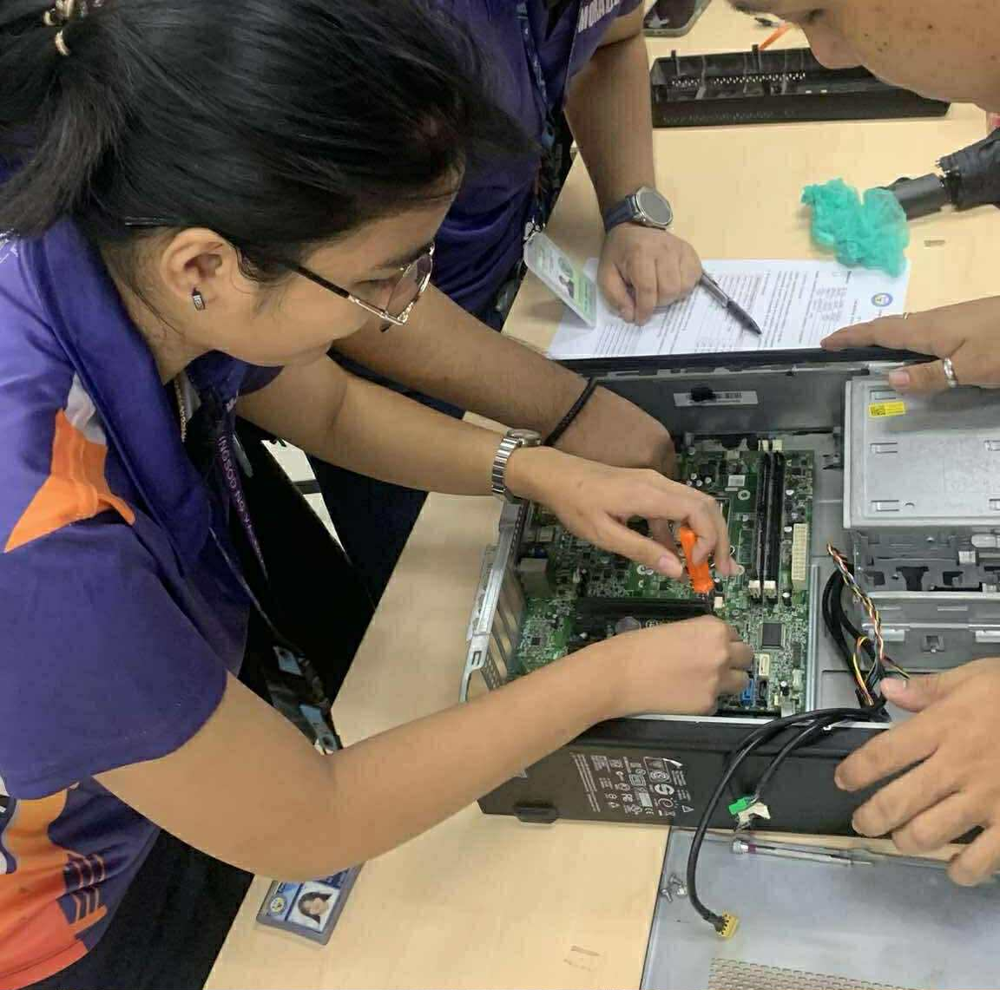
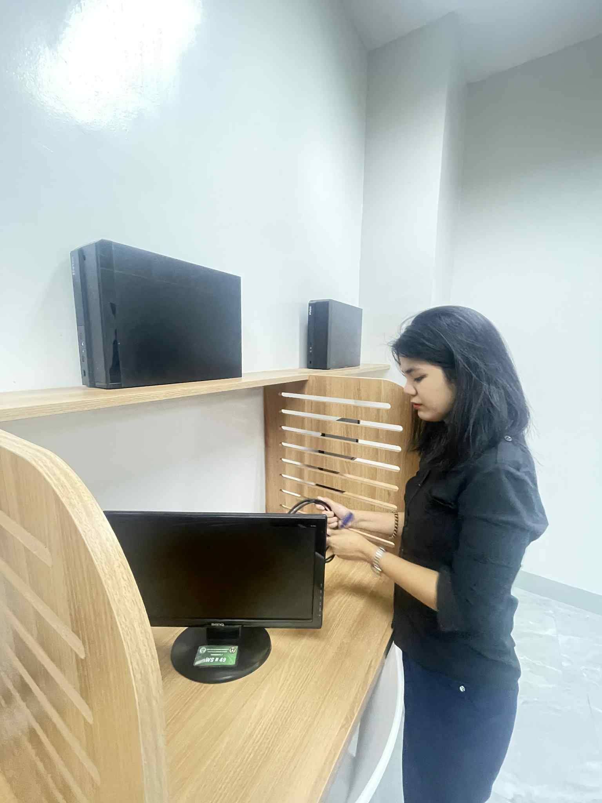
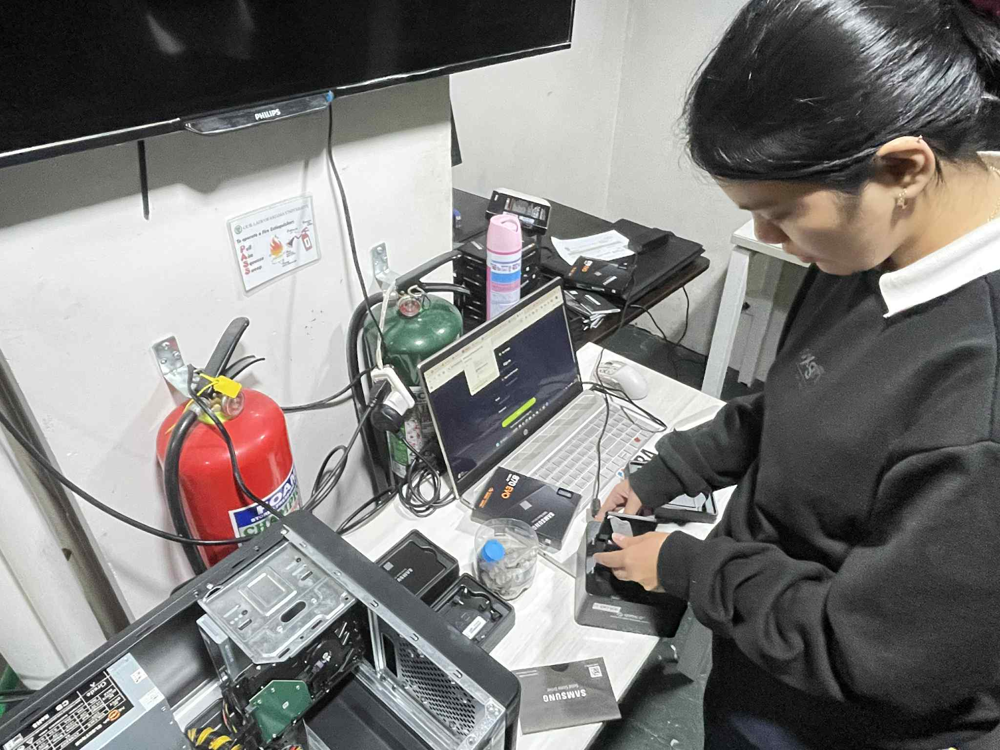
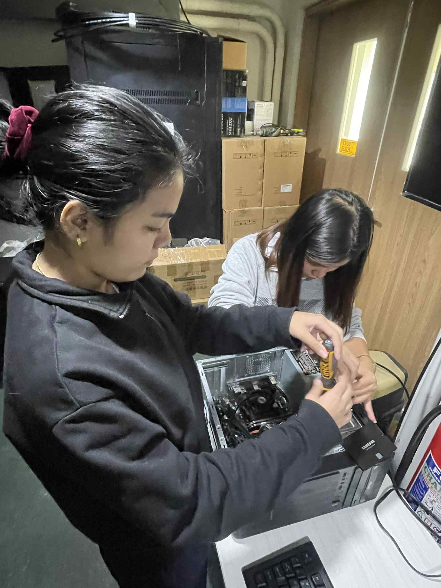
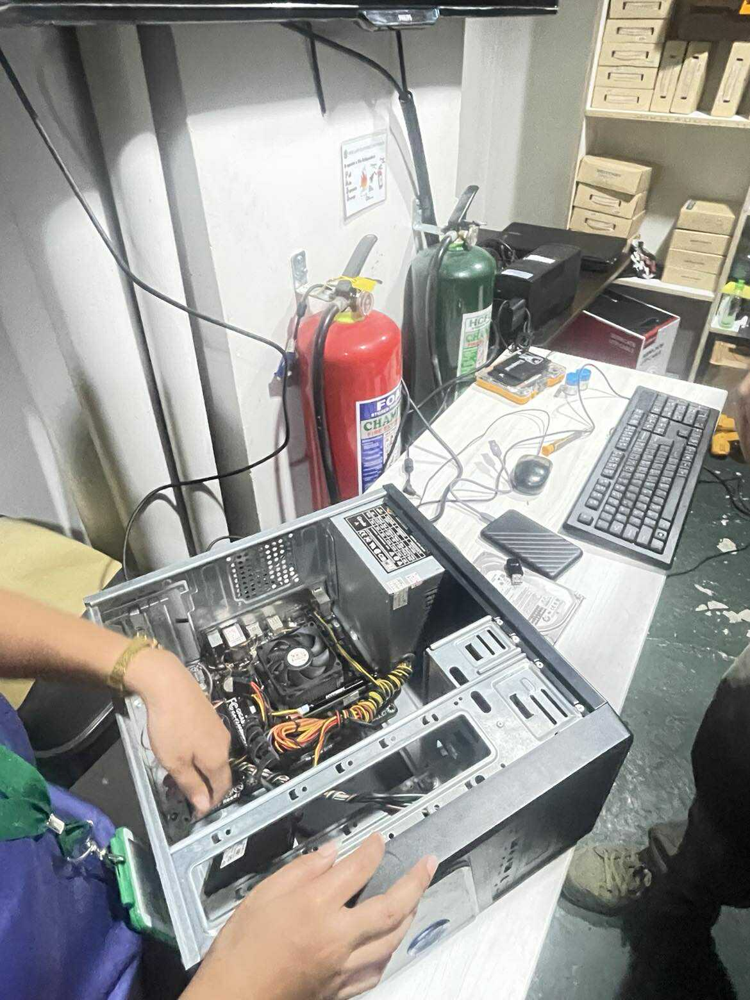

HARDWARE
Hardware Maintenance & Troubleshooting
During my OJT, I worked with computer hardware by assembling, cleaning, and repairing desktops and laptops. I replaced components such as RAM, storage drives, power supplies, and peripherals to improve performance. I also performed diagnostics to identify issues, helped maintain equipment, and ensured every unit operated safely and efficiently. This experience improved my skills in troubleshooting and understanding how each part contributes to the overall system.
Supporting Images



